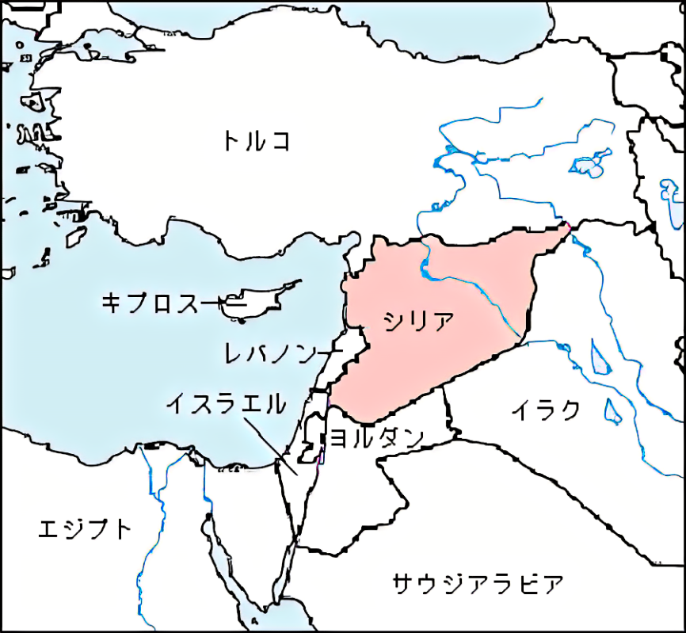

1.位置や分布
シリア・アラブ共和国、通称シリアは、西アジアに位置する共和制国家で、４ヵ国と地中海に囲まれています。
「シリア」という言葉は、周辺のレバノンやパレスチナを含めた「大シリア」を意味する場合もあります。

2.場所
シリアは内戦が続いている国で、戦争が終わった地域でも荒廃したままのところが多いです。
国土西部には広大な平野、南部には肥沃な土地があるため、国内農業のほとんどはこの地域で行われています。
3.人間と自然環境との相互依存関係
シリア内戦が激化した背景には、「干ばつ」と「地球温暖化」が関わっているといわれています。
干ばつによって農村から都市に大量に人が移動した結果、都市部の人口が50パーセント増加しました。
しかし政府はほとんど何も対策を講じませんでした。干ばつ被害が最も深刻だった地域が、昔から差別されてきたクルド人の居住区だったことも問題の放置につながり、
問題の悪化が進んだ結果が内戦の激化だという研究結果も出ています。
4.空間的相互依存作用
シリアは古代より文明が栄えた土地で、異国文化との交流地点となってきたので、西洋風の街並みが混在している。
5.地域
よいことではないですが、紛争が頻繁に起こる地域です。
6.SDGs
SDGs達成とははるか遠くの状況にあります。SDGsは、戦争に関連しているものが多いです。SDGs達成には、先ず内戦終結が先ではないでしょうか。